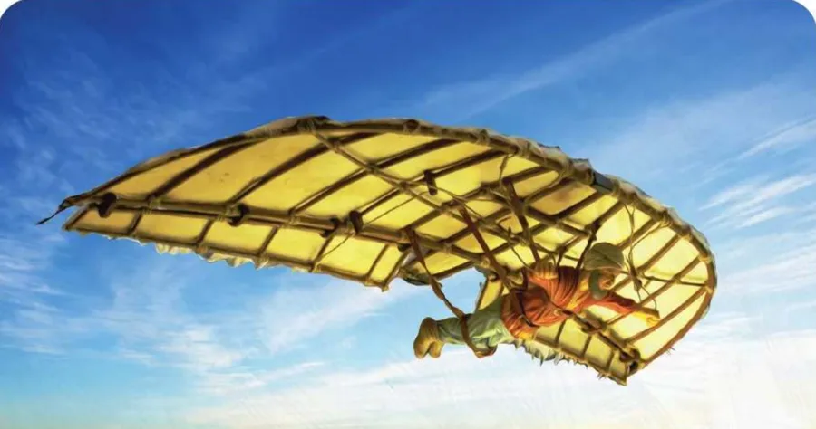

بِطاقَةُ الْمَصادِرِ وَالْمَفاهيمِ: الطَّيَرانُ في بِلادي
الدِّراساتُ الِاجْتِماعِيَّةُ · الصَّفُّ الثّاني · ص 105–110
لِلْجَميعِ

عَبّاسُ بْنُ فِرْناسٍ أَوَّلُ شَخْصٍ أَجْرى تَجْرِبَةَ الطَّيَرانِ في الْقَرْنِ التّاسِعِ الْميلادِيِّ في قُرْطُبَةَ، حَلَّقَ أَكْثَرَ مِنْ عَشْرِ دَقائِقَ ثُمَّ سَقَطَ فَاكْتَشَفَ أَهَمِّيَّةَ الذَّيْلِ، ثُمَّ تَطَوَّرَ الطَّيَرانُ إِلى الْمِنْطادِ (هَواءٌ ساخِنٌ) ثُمَّ الطّائِرَةِ الشِّراعِيَّةِ (دونَ مُحَرِّكٍ) ثُمَّ الطّائِرَةِ الْحَديثَةِ (بِالْوَقودِ).📖 أَقْرَأُ النَّصَّ
مُنْذُ فَجْرِ التّاريخِ كانَ النّاسُ يُراقِبونَ الطُّيورَ، وَيَرْغَبونَ أَنْ يَطيروا في السَّماءِ. عَبّاسُ بْنُ فِرْناسٍ أَوَّلُ شَخْصٍ أَجْرى في الْقَرْنِ التّاسِعِ الْميلادِيِّ تَجْرِبَةَ الطَّيَرانِ، وَكانَ مُتَعَدِّدَ الْمَواهِبِ (شاعِرًا، وَموسيقِيًّا، وَعالِمَ فَلَكٍ، وَمُهَنْدِسًا)، وَجاءَتْ شُهْرَتُهُ الْواسِعَةُ مِنْ مُحاوَلَتِهِ الْأولى لِلطَّيَرانِ عامَ (852م) عِنْدَما أَحاطَ نَفْسَهُ بِمِظَلَّةٍ واسِعَةٍ، وَقَفَزَ مِنْ مِئْذَنَةِ الْجامِعِ الْكَبيرِ في مَدينَةِ قُرْطُبَةَ بِالْأَنْدَلُسِ، فَشَلَتْ مُحاوَلَتُهُ. بَعْدَ ثَلاثٍ وَعِشْرينَ سَنَةً، قامَ بِأَوَّلِ مُحاوَلَةِ طَيَرانٍ بِأُسْلوبٍ يُمْكِنُ أَنْ نُطْلِقَ عَلَيْهِ الطَّيَرانَ الشِّراعِيَّ، فَظَهَرَ في زِيِّ الطَّيَرانِ الْمَصْنوعِ مِنَ الْحَريرِ وَالْمُغَطّى بِريشِ النُّسورِ، اسْتَطاعَ أَنْ يُحَلِّقَ في الْجَوِّ لِأَكْثَرَ مِنْ عَشْرِ دَقائِقَ، فَلَمّا أَرادَ الْهُبوطَ سَقَطَ. هُبوطُ عَبّاسٍ وَارْتِطامُهُ بِالْأَرْضِ جَعَلَهُ يَكْتَشِفُ أَهَمِّيَّةَ الذَّيْلِ في الْهُبوطِ بِسَلامٍ، وَلَمْ يَنْتَبِهْ إِلى أَنَّ الطُّيورَ عِنْدَما تَحُطُّ تَهْبِطُ عَلى ذُيولِها. وَأَصْبَحَ حُلْمُهُ حَقيقَةً حينَ قامَتْ مُحاوَلاتٌ عَديدَةٌ انْتَهَتْ بِمِنْطادٍ مُعَبَّأٍ بِالْهَواءِ السّاخِنِ؛ لِيَرْفَعَهُ وَيُحَلِّقَ في السَّماءِ. تَكَرَّرَتْ مُحاوَلاتُ الطَّيَرانِ إِلى اخْتِراعِ الطّائِرَةِ الشِّراعِيَّةِ، وَهِيَ طائِرَةٌ خَفيفَةٌ تَطيرُ دونَ مُحَرِّكٍ، ثُمَّ اسْتَمَرَّ الْمُخْتَرِعونَ وَالطَّيّارونَ في الْعَمَلِ الْمُتَواصِلِ إِلى أَنْ وَصَلَتِ الطّائِرَةُ الْحَديثَةُ الَّتي تَعْتَمِدُ عَلى الْوَقودِ، وَهِيَ أَحْدَثُ، وَأَسْرَعُ وَسائِلِ النَّقْلِ.
كِتابي ص 105–110
📘 كَلِماتي
ابْنُ فِرْناسٍ
رائِدُ الطَّيَرانِ 👳
الْمِنْطادُ
هَواءٌ ساخِنٌ 🎈
الشِّراعِيَّةُ
بِلا مُحَرِّكٍ 🪂
الْحَديثَةُ
بِالْوَقودِ ✈️
💡 تَعَلَّمْتُ
👳ابْنُ فِرْناسٍ أَوَّلُ مَنْ جَرَّبَ الطَّيَرانَ.
🪶اكْتَشَفَ أَهَمِّيَّةَ الذَّيْلِ في الْهُبوطِ.
🎈الْمِنْطادُ يَرْتَفِعُ بِالْهَواءِ السّاخِنِ.
🪂الطّائِرَةُ الشِّراعِيَّةُ دونَ مُحَرِّكٍ.
✅ أُطَبِّقُ
☐أُصَمِّمُ خَطَّ زَمَنِ الطَّيَرانِ.
☐أُكْمِلُ كِتابي ص 108–110.
🏅 ⭐ أَحْسَنْتَ